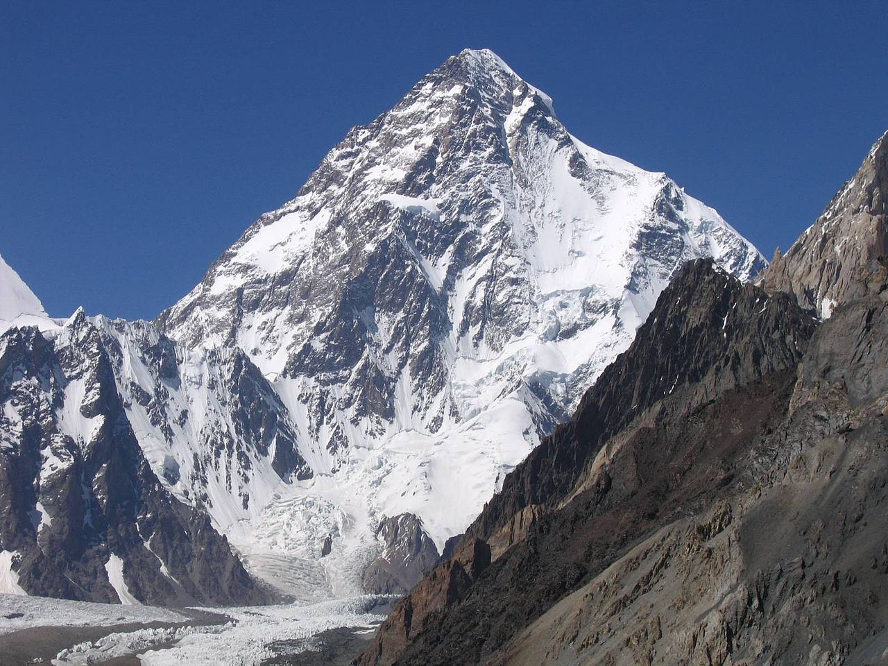
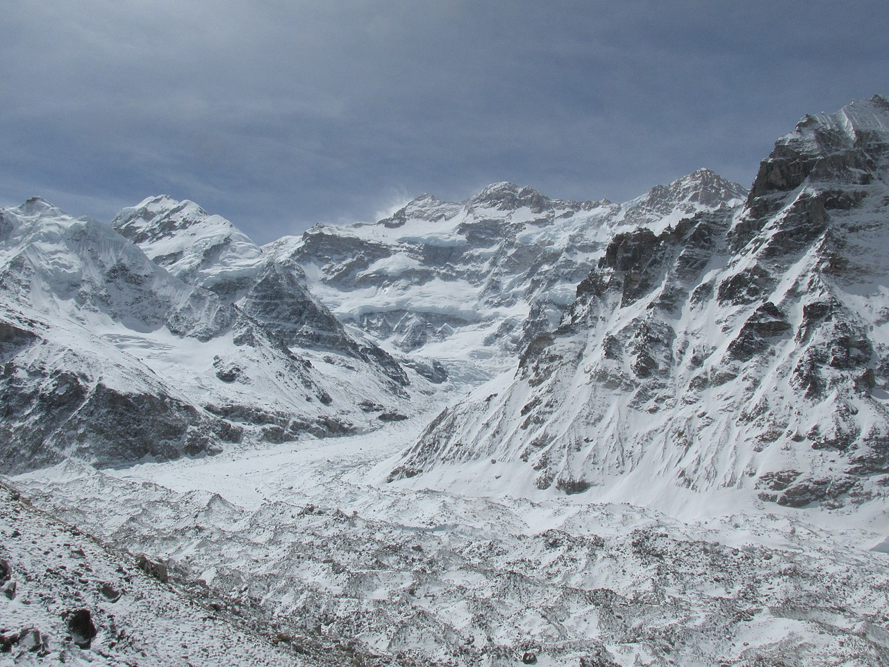

Tallest mountains
-
Everest - A Time Lapse Film
-
K2

Geographical setting
K2 lies in the northwestern Karakoram Range. It is located in the Baltistan region of Gilgit–Baltistan, Pakistan, and the Taxkorgan Tajik Autonomous County of Xinjiang, China.
Height
K2's height given on maps and encyclopedias is 8,611 metres (28,251 ft). In the summer of 2014, a Pakistani-Italian expedition to K2, named "K2 60 Years Later", was organized to commemorate the 60th anniversary of the first ascent of K2.
-
Kangchenjunga

Climbing routes
There are four climbing routes to reach the summit of Kangchenjunga, three of which are in Nepal from the southwest, northwest, and northeast, and one from northeastern Sikkim in India.
To date, the northeastern route from Sikkim has been successfully used only three times.
The Indian government has banned expeditions to Kanchenjunga; therefore, this route has been closed since 2000.In 1955, Joe Brown and George Band made the first ascent on 25 May, followed by Norman Hardie and Tony Streather on 26 May. The full team also included John Clegg (team doctor), Charles Evans (team leader), John Angelo Jackson, Neil Mather, and Tom Mackinnon. The ascent proved that Aleister Crowley's 1905 route (also investigated by the 1954 reconnaissance) was viable. The route starts on the Yalung Glacier to the southwest of the peak, and climbs the Yalung Face, which is 3,000 metres (10,000 ft) high. The main feature of this face is the "Great Shelf", a large sloping plateau at around 7,500 metres (24,600 ft), covered by a hanging glacier.